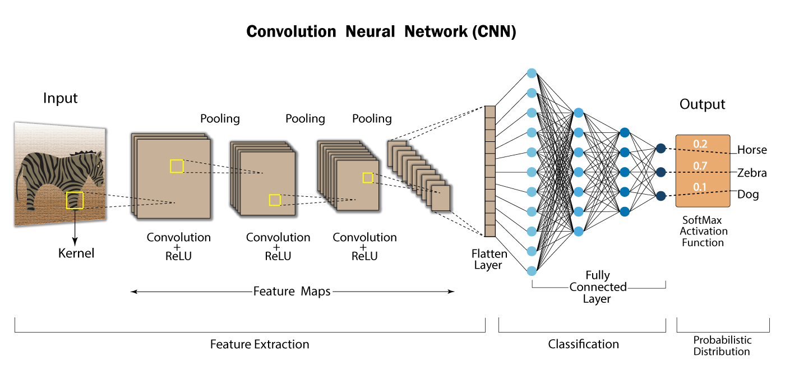

Draw a three-digit number (000–100) to set the volume.
-
-
-
Volume
000
Select an audio source to begin.
Welcome!
This is a Deep Learning Volume Setter. Draw a number from 0 to 100 to control the audio volume.
Disclaimer: Due to web sandbox restrictions, this can't change your system volume. Instead, you can control the volume of an audio file here on the page.
Convolutional Neural Network (CNN)
This project is powered by a CNN, a type of deep learning model ideal for recognizing images. It automatically learns features like edges and curves to identify patterns.

Model Performance
The model was trained on 60,000 images from the MNIST dataset. On a separate test set of 10,000 images, it achieved approximately:
98.7%
...accuracy.
Your Drawings vs. Training Data
While the model is highly accurate on clean MNIST digits, your drawings are different! To help, in-browser preprocessing centers and scales your drawing to match the training data, greatly improving accuracy.